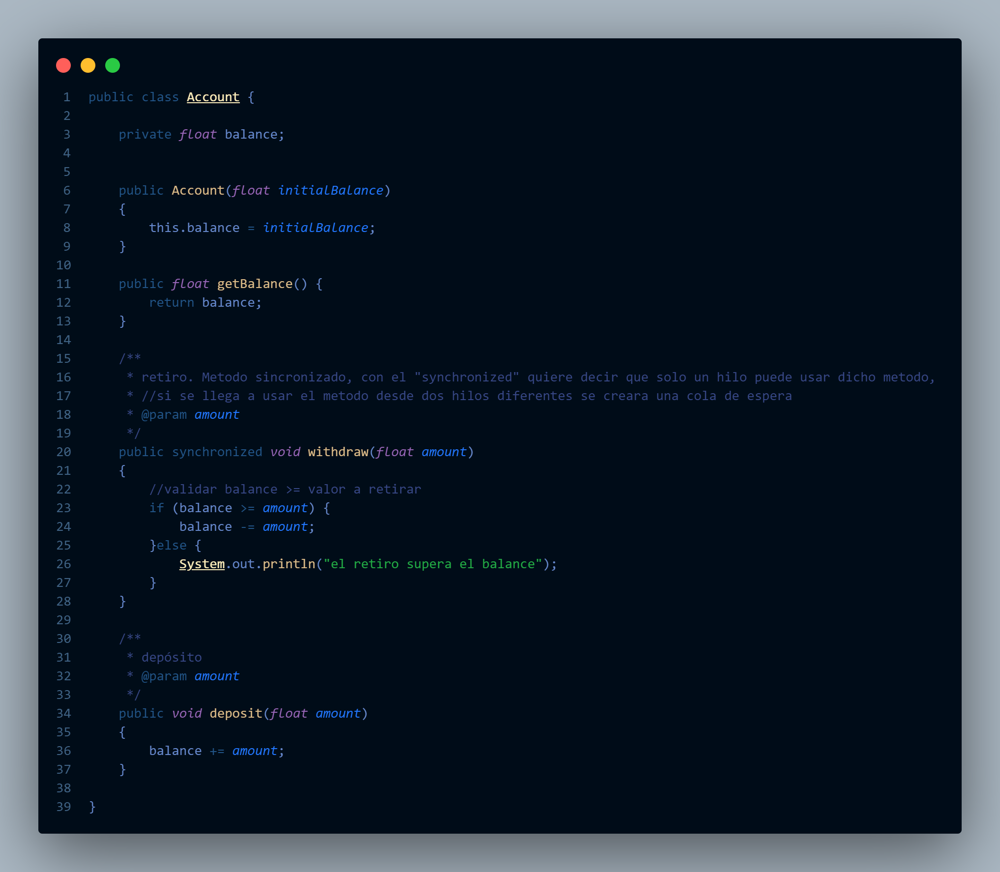
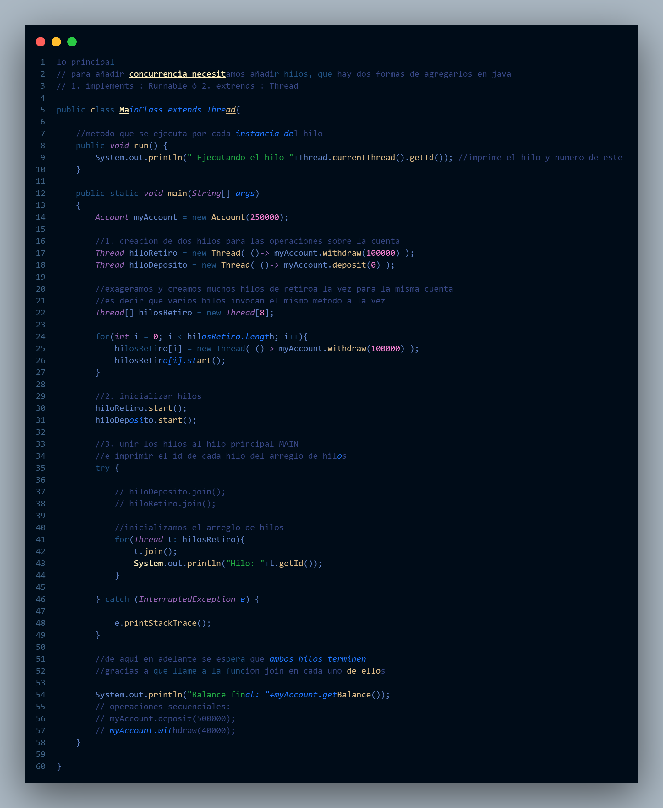
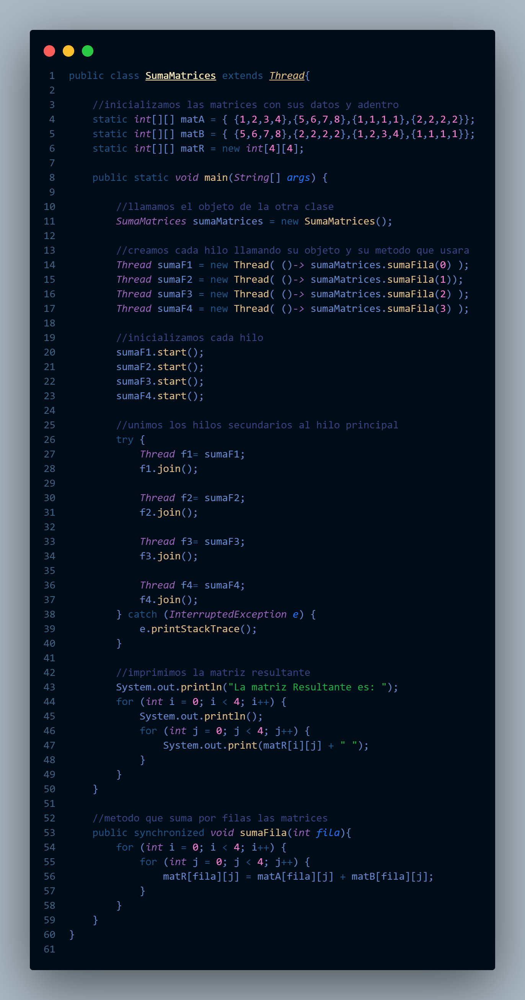

En el último tramo del curso, nos sumergimos nuevamente en Java, trabajamos muchos de los ejercicios en pareja y aprendimos el tema de los hilos.
ayudan a que un programa que debe realizar diversas funciones no lo haga secuencialmente, sino que se asignen hilos individuales a cada tarea, optimizando así el rendimiento. Para ilustrar esto, considera la situación en la que debes realizar 2 sumas, 2 restas, 2 divisiones y 2 multiplicaciones con 2 conjuntos de números diferentes. La solución es bastante clara: puedes crear 4 hilos, vincularlos al hilo principal (donde se ejecuta el programa) y, al finalizar, unirlos a este.
 Realizamos tambien una suma de matrices, creando los hilos para darles una tarea
Aqui llegamos al final, espero hallan entendido el resumen de mi curso en Lenguajes de Programacion
Muchas Gracias Profesor!